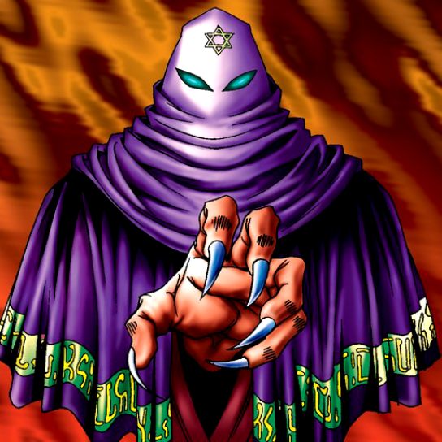

Sectarian of Secrets

Description: "Weakens an opposing enemy by 300 points when destroyed in battle."
STATS
ATK: 700
DEF: 500DECK COST
Deck Cost per Card: 17EFFECT NOT IMPLEMENTED
Fusion List (25 Possible Fusions)
- Sectarian of Secrets + Ancient Jar = Ushi Oni
- Sectarian of Secrets + Bat = Disk Magician
- Sectarian of Secrets + Bolt Escargot = The Immortal of Thunder
- Sectarian of Secrets + Cyber-Stein = Disk Magician
- Sectarian of Secrets + Dancing Elf = Dark Elf
- Sectarian of Secrets + Electric Lizard = The Immortal of Thunder
- Sectarian of Secrets + Fiend's Hand = Magical Ghost
- Sectarian of Secrets + Fire Reaper = Magical Ghost
- Sectarian of Secrets + Flame Ghost = Magical Ghost
- Sectarian of Secrets + Holograph = Disk Magician
- Sectarian of Secrets + Jinzo #7 = Disk Magician
- Sectarian of Secrets + Lesser Dragon = Blackland Fire Dragon
- Sectarian of Secrets + Mega Thunderball = The Immortal of Thunder
- Sectarian of Secrets + Mystic Lamp = Lord of the Lamp
- Sectarian of Secrets + Mystical Elf = Dark Elf
- Sectarian of Secrets + Oscillo Hero #2 = The Immortal of Thunder
- Sectarian of Secrets + Petit Dragon = Blackland Fire Dragon
- Sectarian of Secrets + Phantom Ghost = Magical Ghost
- Sectarian of Secrets + Pot the Trick = Ushi Oni
- Sectarian of Secrets + Ryu-Kishin = Ryu-Kishin Powered
- Sectarian of Secrets + The Immortal of Thunder = Kaminari Attack
- Sectarian of Secrets + Wicked Dragon with the Ersatz Head = Blackland Fire Dragon
- Sectarian of Secrets + Wing Egg Elf = Dark Elf
- Sectarian of Secrets + Wood Remains = Magical Ghost
- Sectarian of Secrets + Yamatano Dragon Scroll = Blackland Fire Dragon